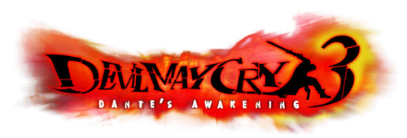
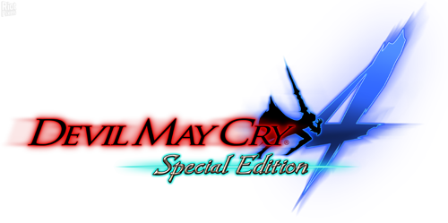
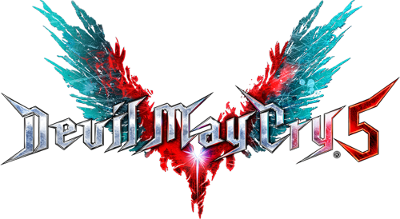

La historia de Devil May Cry (el primer juego) se centra en Dante, un cazador de demonios mitad humano y mitad demonio, hijo del legendario demonio Sparda que hace siglos se rebeló contra su propia especie para proteger a la humanidad. Dante dirige una agencia de "trabajos extraños" llamada "Devil May Cry".
La trama comienza cuando una misteriosa y hermosa mujer llamada Trish irrumpe en su oficina con una propuesta: necesita su ayuda para detener al Emperador del Inframundo, Mundus, quien planea regresar al mundo humano para subyugarlo. Trish se parece sorprendentemente a la difunta madre de Dante, Eva.
Dante acepta a regañadientes y viaja a la remota isla de Mallet, donde Mundus tiene su fortaleza. Allí, Dante se enfrenta a hordas de demonios y a poderosos secuaces de Mundus, incluyendo a Phantom, una araña demoníaca gigante, y Griffon, un demonio alado. A lo largo de su misión, Dante también se cruza con Nightmare, un demonio amorfo que puede cambiar de forma.
A medida que avanza, Dante descubre que Trish es en realidad una creación de Mundus, diseñada para atraerlo a una trampa. A pesar de esta traición inicial, Trish comienza a desarrollar sentimientos genuinos y duda de su lealtad hacia Mundus al presenciar la valentía y el sentido de la justicia de Dante.
En un punto crucial, Dante se enfrenta a un guerrero misterioso que empuña una espada similar a la suya. Este guerrero resulta ser Nelo Angelo, quien más tarde se revela como Vergil, el hermano gemelo perdido de Dante, que ha sido corrompido y esclavizado por Mundus. Dante se ve obligado a luchar contra su propio hermano en varios enfrentamientos desgarradores.
Finalmente, Dante llega a la confrontación final con Mundus. En una batalla épica, Mundus revela su verdadero poder, pero Dante, impulsado por su herencia demoníaca y el apoyo de Trish, logra derrotarlo, sellándolo de nuevo en el inframundo.
Después de la batalla, la isla comienza a derrumbarse. Dante y Trish escapan juntos en un avión. Al final del juego, se muestra que han decidido trabajar juntos como socios, y Dante renombra su negocio a "Devil Never Cry", una frase que Trish le dice durante su aventura, significando que incluso un demonio puede llorar por la pérdida de un ser querido.
La historia de Devil May Cry 2 se desarrolla cronológicamente después del primer juego, aunque presenta un tono y una atmósfera significativamente diferentes. La trama principal se centra en Dante y una mujer guerrera llamada Lucia en su lucha contra un hombre llamado Arius, un poderoso hombre de negocios que busca obtener un inmenso poder demoníaco para dominar el mundo.
La historia comienza en la isla Dumary, donde Dante se encuentra con Lucia, miembro de un clan guardián que ha protegido la isla de las fuerzas demoníacas durante generaciones. Lucia le pide ayuda a Dante para detener a Arius, quien está llevando a cabo rituales para despertar a un poderoso demonio llamado Argosax el Caos.
A lo largo del juego, Dante y Lucia siguen caminos separados pero paralelos, enfrentándose a los secuaces de Arius y desbaratando sus planes. Lucia tiene una conexión especial con los demonios y la isla, y su historia personal se entrelaza con la amenaza que representa Arius. Se revela que Lucia es una creación artificial, un homúnculo creado por Arius, lo que genera un conflicto interno en ella sobre su identidad y propósito.
Arius busca obtener los cuatro talismanes arcanos que sellan el poder de Argosax. A medida que Dante y Lucia los recuperan o frustran los intentos de Arius por obtenerlos, descubren más sobre la historia de Argosax y el peligro que representa su despertar.
En la segunda parte del juego, jugamos principalmente como Lucia, mientras Dante se enfrenta a una misión separada relacionada con un portal al mundo demoníaco que se ha abierto. La historia de Lucia se centra en su lucha contra los demonios y su confrontación con Arius, descubriendo la verdad sobre su creación y su destino.
Finalmente, Dante regresa para unirse a Lucia en la batalla final contra Arius, quien ha logrado fusionarse parcialmente con el poder de Argosax. Después de una serie de enfrentamientos, Dante derrota a Arius, frustrando sus ambiciones de dominación mundial.
Sin embargo, la amenaza no termina ahí, ya que Argosax logra manifestarse en su forma completa. Dante se enfrenta a este poderoso demonio en una batalla épica, logrando derrotarlo y sellar su poder una vez más.
Al final del juego, Dante se prepara para partir de la isla Dumary. Lucia, sintiéndose insegura sobre su futuro ahora que su propósito original (detener a Arius) se ha cumplido, le pregunta si se volverán a ver. Dante, con su habitual actitud despreocupada, lanza una moneda al aire y le dice que si cae cara, se volverán a encontrar. La moneda cae mostrando cara, dejando un final ambiguo pero esperanzador para su relación.
El Devil May Cry 3 comienza con una misteriosa torre gigantesca, llamada Temen-Ni-Gru, que emerge repentinamente del suelo en la ciudad. Esta torre es una antigua puerta de entrada al mundo demoníaco, sellada hace mucho tiempo por el padre de Dante y Vergil, el legendario demonio Sparda.
Poco después de la aparición de la torre, Dante es visitado por un hombre enigmático llamado Arkham. Arkham le informa que Vergil, el hermano gemelo de Dante, planea abrir la Temen-Ni-Gru para obtener el poder de su padre. Dante, reacio a involucrarse inicialmente, se ve arrastrado al conflicto cuando Arkham envía demonios para atacarlo.
Impulsado por la necesidad de detener a su ambicioso hermano, Dante se aventura a la cima de la torre. En su ascenso, se encuentra con varios adversarios poderosos, incluyendo a los tres sirvientes de Vergil: Lady, una cazadora de demonios humana que busca venganza contra los demonios (y particularmente contra su padre, Arkham), y los grotescos demonios Cerberus y Agni & Rudra.
A medida que Dante avanza, la historia revela más sobre el pasado de los gemelos y su conflictiva relación. Se muestra que ambos poseen una inmensa sed de poder, pero sus motivaciones y métodos difieren drásticamente. Vergil busca abrazar completamente su herencia demoníaca para obtener poder absoluto, mientras que Dante se inclina más hacia su lado humano y lucha para proteger a la humanidad.
Lady se convierte en una aliada incómoda para Dante, ya que ambos comparten un objetivo común de detener a Vergil y Arkham. Su historia personal se entrelaza con la trama principal, revelando la manipulación de Arkham y su propia búsqueda de venganza por la muerte de su madre a manos de su padre, quien se había convertido en un demonio.
A lo largo de la aventura, Dante y Vergil se enfrentan en varias ocasiones en duelos intensos y cargados de emoción. Estos encuentros no solo demuestran su increíble poder, sino que también profundizan en la rivalidad fraternal y las diferencias filosóficas que los separan.
Finalmente, Dante llega a la cima de la Temen-Ni-Gru y se enfrenta a Vergil en una batalla climática. Vergil logra obtener la espada Force Edge y el amuleto perfecto, los cuales pertenecieron a Sparda, abriendo completamente el portal al mundo demoníaco. Sin embargo, su victoria es efímera, ya que Arkham lo traiciona y utiliza el poder recién adquirido para sus propios fines malévolos.
En una alianza temporal, Dante y Vergil unen fuerzas para derrotar a Arkham, quien se ha transformado en una criatura monstruosa con un poder inmenso. Después de una lucha feroz, logran vencerlo y restaurar el equilibrio.
Tras la derrota de Arkham, la tensión entre los hermanos resurge. Dante y Vergil se enfrentan en un último y devastador duelo en la cima de la torre, mientras el portal al mundo demoníaco comienza a colapsar. Dante logra derrotar a Vergil, quien elige quedarse en el mundo demoníaco antes que admitir su derrota o buscar la ayuda de su hermano.
Lady presencia la conclusión de la batalla y, aunque inicialmente buscaba venganza contra todos los demonios, comienza a comprender la complejidad del linaje de Dante y Vergil. Al final, Dante regresa al mundo humano, reflexiona sobre la pérdida de su hermano y decide abrazar su doble herencia, dedicándose a proteger el mundo humano de las amenazas demoníacas. Es en este punto donde establece su icónica tienda, "Devil May Cry".
El Devil May Cry 4 comienza con una escena impactante: durante una ceremonia en honor a Sparda, Dante irrumpe en la Ópera y asesina al Sumo Sacerdote de la Orden, Sanctus. Este acto es presenciado por Nero, un joven caballero sacro de la Orden con un misterioso brazo derecho demoníaco llamado Devil Bringer.
Nero es inmediatamente asignado a la captura de Dante, considerado un hereje y una amenaza para la Orden. A medida que persigue a Dante, Nero comienza a cuestionar las verdaderas intenciones de la Orden y descubre oscuros secretos sobre sus experimentos demoníacos y su veneración a Sparda.
Durante su búsqueda, Nero se cruza con varios demonios poderosos enviados por la Orden, así como con figuras enigmáticas como Gloria, una comandante de alto rango en la Orden con sus propios objetivos ocultos, y Agnus, un científico obsesionado con la investigación demoníaca que crea poderosas armas y demonios artificiales.
A medida que avanza la historia, se revela que la Orden de la Espada no es lo que parece. Bajo el liderazgo de Sanctus, la Orden está secretamente utilizando tecnología demoníaca y la esencia de demonios capturados para crear un ejército de guerreros demoníacos y una poderosa arma llamada "El Salvador", con el objetivo de obtener un poder similar al de Sparda y purgar el mundo de los "demonios no deseados".
Nero descubre que su Devil Bringer está conectado con el linaje de Sparda y que posee un inmenso poder latente. También se revela que Gloria es en realidad Trish, quien ha estado infiltrada en la Orden por órdenes de Dante para investigar sus verdaderas intenciones.
En la segunda parte del juego, la perspectiva cambia a Dante. Él también está investigando las actividades de la Orden y se enfrenta a los demonios más poderosos que han sido despertados por sus experimentos. Dante busca destruir "El Salvador" y exponer la corrupción de la Orden.
A medida que las historias de Nero y Dante se entrelazan, ambos descubren la verdad detrás de los planes de Sanctus y su manipulación de la Orden. Se revela que Sanctus busca utilizar el poder de "El Salvador" para convertirse en un dios y gobernar el mundo.
En un enfrentamiento climático, Nero se enfrenta a Sanctus, quien se ha fusionado con "El Salvador". Utilizando el poder de su Devil Bringer, que se revela como la manifestación del espíritu de Vergil (aunque esto no se explica completamente hasta Devil May Cry 5), Nero logra derrotar a Sanctus y destruir "El Salvador", liberando a la ciudad de Fortuna de su amenaza.
Después de la batalla, Dante reconoce la fuerza y el coraje de Nero, dejándolo a cargo de la protección de Fortuna. Nero, ahora consciente de su herencia y su poder, acepta su nuevo rol. El juego termina con Nero y Kyrie, una joven a la que protege y con la que tiene una relación cercana, mirando hacia el futuro.
La historia de Devil May Cry 5 se desarrolla varios años después de los eventos de Devil May Cry 4. Comienza con la repentina aparición de un gigantesco árbol demoníaco llamado Qliphoth en la ciudad de Red Grave City. Este árbol comienza a drenar la sangre de los humanos, causando caos y destrucción.
Nero, quien perdió su brazo Devil Bringer al comienzo del juego, se dirige a la ciudad junto con su compañera Nico, una habilidosa armera que le ha creado prótesis de brazo mecánicas llamadas Devil Breakers. Pronto se encuentran con V, un misterioso hombre vestido de negro y con tatuajes, que posee la habilidad de invocar demonios para luchar. V contrata a Nero y Dante para que lo ayuden a detener la amenaza del Rey Demonio Urizen, quien se encuentra en la cima del Qliphoth.
A medida que avanzan, los tres personajes jugables (Nero, Dante y V) se enfrentan a poderosos demonios y descubren oscuros secretos sobre los orígenes del Qliphoth y los motivos de Urizen. Se revela que Urizen es en realidad la forma demoníaca separada de Vergil, el hermano gemelo de Dante, quien buscaba poder para protegerse a sí mismo. Vergil se había dividido utilizando la espada Yamato. V resulta ser la forma humana debilitada de Vergil.
La historia explora temas de familia, venganza y el conflicto entre el poder demoníaco y la humanidad. Nero descubre que Vergil es su padre, lo que añade una capa personal a su lucha. Finalmente, Nero se enfrenta a Vergil en una batalla épica, buscando tanto derrotarlo como comprender su pasado.
Después de la derrota de Urizen (y la posterior reunificación de Vergil), el Qliphoth comienza a marchitarse. Sin embargo, la amenaza no termina ahí, ya que Vergil decide descender al inframundo para cortar la raíz del árbol y evitar futuras invasiones al mundo humano. Dante decide seguirlo para evitar que su hermano se pierda en el infierno, dejando a Nero para proteger el mundo humano.